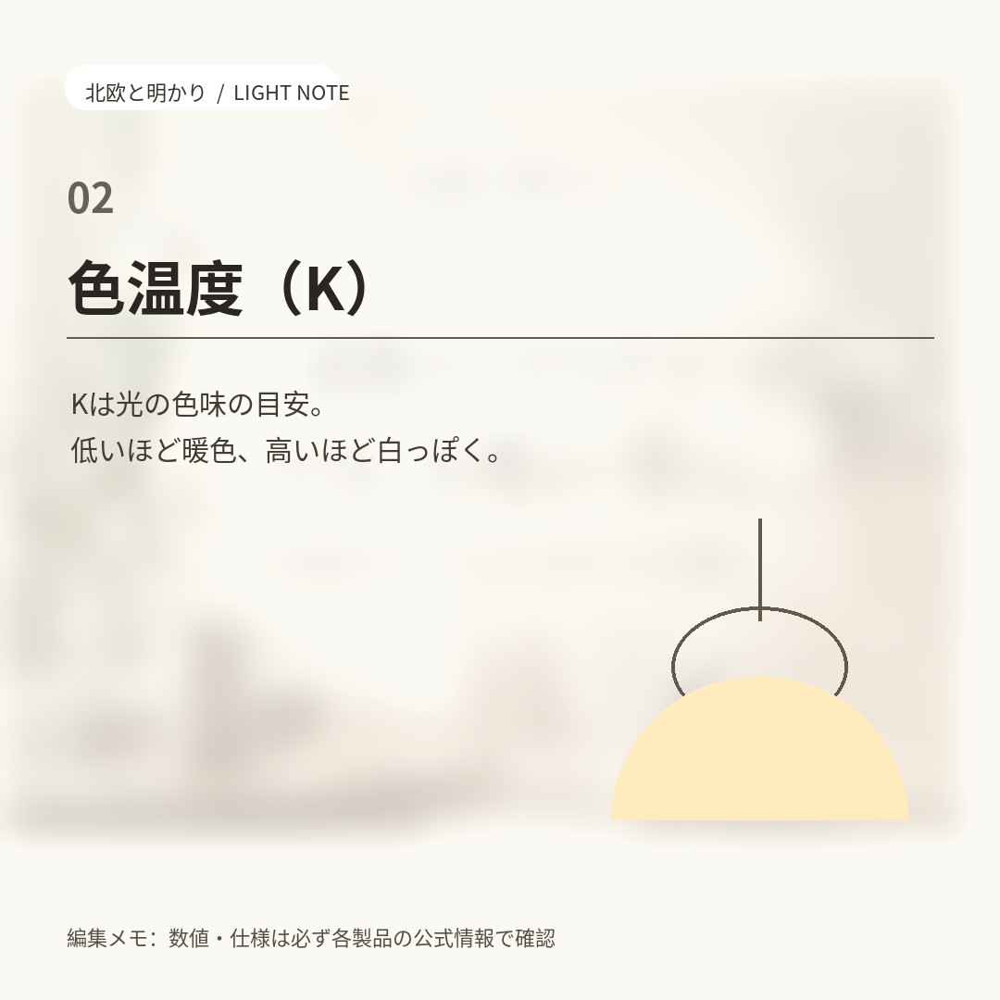
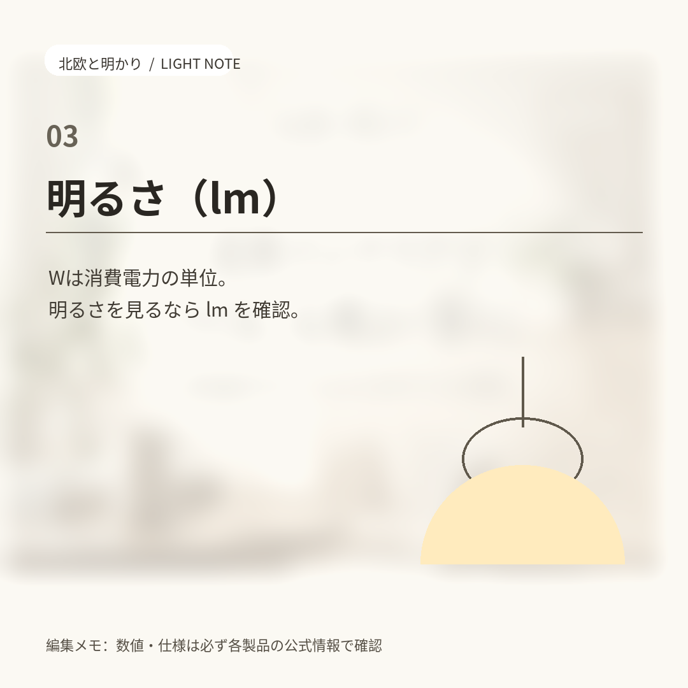
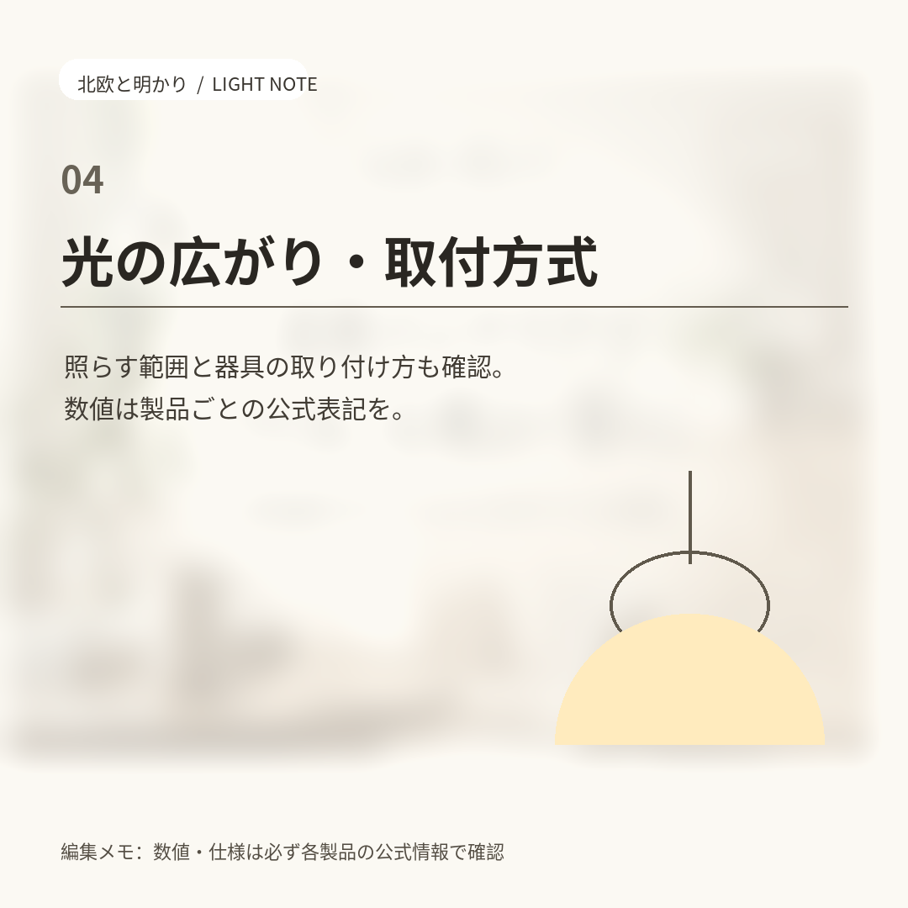

照明
照明を最初に決める。部屋の印象は、家具より先に光で変わる

家具を買い替えるより、照明を1つ変えるほうが部屋の印象は変わります。ただ、商品ページの「2700K」「810lm」が読めないと選びようがありません。この記事では、照明を最初に決めるときに見る順番だけを整理します。
編集レンズ
読者層を想定した編集上の観点です。特定の個人の体験や属性ではなく、見る順番を変えるための切り口として使っています。
- 20代視点
賃貸で工事をしたくない前提の視点。引掛シーリング対応の器具かコンセント式のスタンドを軸に、後から色温度を変えられる調色対応を優先して見ます。
- 30代視点
休息と作業が同じ部屋で起きる前提の視点。電球色の全体照明と昼白色の手元照明に分ける考え方を軸に、1部屋に複数の用途があるときの候補を見ます。
- 40代視点
長く使う前提の視点。口金（E26／E17など）と取付方式の互換性、lm表記のある製品だけを候補に残す、という消去法で見ます。
1. 色温度（K）で雰囲気が決まる
数値が低いほどオレンジ寄り、高いほど青白くなります。一般に2700K前後が電球色、3500K前後が温白色、5000K前後が昼白色と表記されます。同じ部屋でも色温度を変えるだけで印象が変わるため、まずここを決めます。
2. 明るさは W ではなく lm を見る
W（ワット）は消費電力であって明るさではありません。LEDでは同じ明るさでもWが小さいため、比較にはlm（ルーメン）を使います。lmの記載がない照明は、明るさを比べようがありません。
3. 光の広がりと取付方式を確認する
部屋全体を照らすシーリングライトと手元を照らすスタンドでは必要なlmが違います。メーカーの適用畳数表記に合わせるのが確実です。器具ごと替える場合は取付方式、電球だけ替える場合は口金サイズを合わせます。ここが合わないと物理的に付きません。



この記事の根拠
この記事は特定の外部資料を典拠とせず、商品ページに一般に表示される項目の読み方を編集方針として整理したものです。個々の商品の数値・条件は、各商品ページとメーカー・ショップの公式情報でご確認ください。
次に読む：ヨリドリのガイド